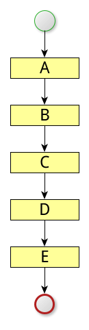

今天就能帶回家的
Java coroutine！
關於我
一名程式員，
現任職於資策會
前言
架構設計有賺有賠，
導入前請詳閱公開說明文件
所有的設計都是 trade off
沒有最好或萬用的解法
只有考慮清楚、討論充足後
大家願意一同承擔風險的解法
今天的主角 -- Quasar
- 處境－我們遇到了什麼問題
- 實作－Quasar 從 0 到 1
- 原理－淺解 Coroutine
- 探底－再談 Continuation
- 實務－Real World Quasar
- 結論
我們遇到了什麼問題？
當同步變成非同步，
就是豬羊變色的開始
當一切還單純美好時
後來，開始有了些擴展
解決方案之一
解決方案之二

最後，我們選擇了那條
充滿荊棘的冒險之路...
Quasar 從 0 到 1
什麼是 Quasar ?
一種 Java based coroutine 實作，
基於 Fiber 與 Continuation 機制，
提供靈活、輕量的方式，實現以同步式
觀點，進行非同步式的開發。
Gradle 設定
configurations {
quasar
}
dependencies {
compile "co.paralleluniverse:quasar-core:0.7.10:jdk8"
quasar "co.paralleluniverse:quasar-core:0.7.10:jdk8@jar"
}
test {
jvmArgs "-javaagent:${configurations.quasar.singleFile}"
}